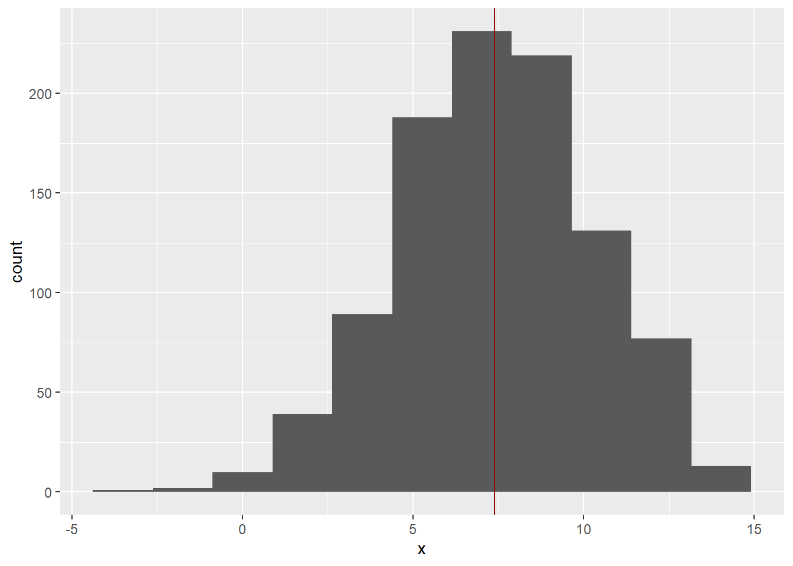
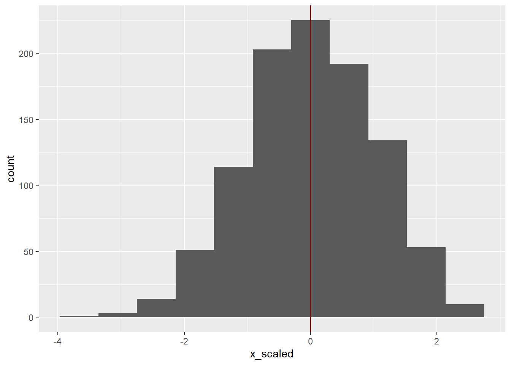

Background reading: Chapter 10 of Whitlock & Schluter (2018).
For our first example, let’s generate a random sample of 100 measurements from a population that has a normal distribution with a mean of 13.5 and a standard deviation of 2.82 and assign that sample to a variabled named x.
You might be wondering about the set.seed() function. That ensures that the random numbers you generate when running this code will be the same as the ones shown here. YOU MUST RUN set.seed() immediately before any random number generator like rnorm() to in order to get the same random numbers. If you re-run the code later, always be sure to run set.seed() before generating your vector of values for x.
Now print x to see the numbers you generated.
Now let’s see how well the sample represents the population it was drawn from by calculating the mean and standard deviation of the sample.
[1] 7.393641[1] 2.872776NOTE: If you get any numbers for the mean and standard deviation other than those shown above, then it is probably because you didn’t generate the same set of random numbers as we did here. Re-run the set.seed() and x<-rnorm() lines above, in that order.
Those numbers are fairly close to the population parameters we used to generate the data (mean = 7.5, sd = 2.82).
But does the sample have a normal distribution? Let’s graph it to make sure. Remember that an effective way to visualize a single variable is with a histogram.
As always, we will use ggplot() for graphing, which means we need to load the tidverse package. It also means we need to put x in a data frame, because the data argument to ggplot() must always be a data frame (not a vector). Note the use of geom_vline() to add a vertical line for the mean value.
# load the tidyverse package for ggplot2, tibble, and dplyr
library(tidyverse)
# create a data frame (tibble) to use for plotting
df <- tibble(x)
df# A tibble: 1,000 x 1
x
<dbl>
1 4.72
2 6.39
3 11.2
4 10.2
5 1.48
6 10.5
7 3.81
8 9.04
9 4.64
10 9.70
# ... with 990 more rows# plot a histogram of x
ggplot(df, aes(x = x)) +
geom_histogram(bins = 11) +
geom_vline(aes(xintercept = mean(x)), color = "darkred")
Looking at the histogram, you might think that its not particularly bell-shaped with that seemingly left-skewed distribution. This kind of outcome is actually common when taking a random sample. Those outlier values below -1 are fairly rare and only represent a tiny proportion of the sample. If you sampled the same distribution again, you could just as easily have outliers on the other end of the distribution, or on both, or no outliers at all. The overall shape and center of gravity, however, would be the same.
To convert a variable to Z-scores, you subtract its mean and divide by its standard deviation. This is called standardizing a variable, or sometimes scaling (see note below). The resulting numbers are called with Z-scores.
Remember, the Z distribution has a mean of 0 and a standard deviation of 1. Our variable has a mean of about 7.39.
To get our variable to have a mean of zero, we would need to subtract 7.39 from each value. This is called centering.
[1] -2.6746998 -1.0071331 3.7963717 2.7987818 -5.9089237 3.1208532
[7] -3.5807320 1.6496315 -2.7502470 2.3063388 0.3611334 -2.4271634
[13] 0.6214487 -1.3348925 3.6165069 -1.0651237 2.4738510 5.4539231
[19] -1.1090604 -0.2068910Let’s check if the mean of the new variable is zero.
[1] 1.067798e-16That’s very close to zero. The “e-16” is exponential notation meaning the actual mean is about 0.0000000000000001067798, or just about zero. Why is it not zero? Basically it’s due to how R rounds very small numbers.
Our variable x is centered now, but it still has a standard deviation of 2.87.
[1] 2.872776The next step is to scale the variable so that it has a standard deviation of 1. This can be done by dividing each value by the variable’s standard deviation of 2.87.
[1] 1[1] 3.799023e-17That’s it… you have now scaled the variable x. The values f x_scaled are now called “Z-scores”. They have a mean of 0 and a standard deviation of 1.
# plot a histogram of x_scaled
ggplot(tibble(x_scaled), aes(x = x_scaled)) +
geom_histogram(bins = 11) +
geom_vline(aes(xintercept = mean(x_scaled)), color = "darkred")
A note on terminology:
Converting a variable to Z-scores is often called “standardizing”, but it is also sometimes refered to as “scaling”. This can be confusing because “scaling” can thus refer in the loose sense to the act of standardizing, or in the strict sense to dividing by the standard deviation.
On a related note, there is actually a handy function in R that both centers and scales (in the strict sense) called. Confusingly the function is called scale().
Now you know how to standardize a variable stored as a vector. But what if you want to standardize a variable in a data frame? With dplyr it’s super easy!
# start with data frame and then
# create a new variable for z-scores
mutate(df, z = (x - mean(x)) / sd(x))# A tibble: 1,000 x 2
x z
<dbl> <dbl>
1 4.72 -0.931
2 6.39 -0.351
3 11.2 1.32
4 10.2 0.974
5 1.48 -2.06
6 10.5 1.09
7 3.81 -1.25
8 9.04 0.574
9 4.64 -0.957
10 9.70 0.803
# ... with 990 more rowsFor the assignmet we will use the heights data set in the dslabs package.
The data set contains the height and sex of 1,050 students.
First, install dslabs using the Packages tab in RStudio. Then load the heights data set and turn it into a tibble so it prints nicely.
# A tibble: 1,050 x 2
sex height
<fct> <dbl>
1 Male 75
2 Male 70
3 Male 68
4 Male 74
5 Male 61
6 Female 65
7 Female 66
8 Female 62
9 Female 66
10 Male 67
# ... with 1,040 more rowsYour assignment is to:
height (for all students, not females and males separately).Copy and paste this template into your R script.
Fill in the missing elements under the “assignment” heading
#### Lab 5 Script Template
### Practice ----------------------------------------------
## Objective 1. Visualize a normal distribution -----------
# randomly sample a normal distribution
set.seed(52)
x <- rnorm(n = 1000, mean = 7.5, sd = 2.82)
x # print x in the console
mean(x) # calculate the mean
sd(x) # calculate the standard deviation
# load the tidyverse package for ggplot2, tibble, and dplyr
library(tidyverse)
# create a data frame (tibble) to use for plotting
df <- tibble(x)
df
# plot a histogram of x
ggplot(df, aes(x = x)) +
geom_histogram(bins = 11) +
geom_vline(aes(xintercept = mean(x)), color = "darkred")
## Objective 2. Convert a variable to *Z*-scores ----------
# center x
x_centered <- x - mean(x)
x_centered[1:20] # print the first 20 values
mean(x_centered) # calculate the mean
sd(x_centered) # calculate the standard deviation
# scale the variable
x_scaled <- x_centered / sd(x_centered)
sd(x_scaled)
mean(x_scaled)
# plot a histogram of x_scaled
ggplot(tibble(x_scaled), aes(x = x_scaled)) +
geom_histogram(bins = 11) +
geom_vline(aes(xintercept = mean(x_scaled)), color = "darkred")
# start with data frame and then
# create a new variable for z-scores
mutate(df, z = (x - mean(x)) / sd(x))
### Assignment -----------------------------------------
### ENTER YOUR CODE BELOW
# 1. Plot the distribution of heights for all students.
# 2. Does the distribution look normal? (put 'yes' or 'no' here)
# 3. Standardize the variable `height`.
# 4. Plot the distribution of Z-scores for males and females. Use different
# aesthetics or facets for sex, or create separate plots for partial credit.